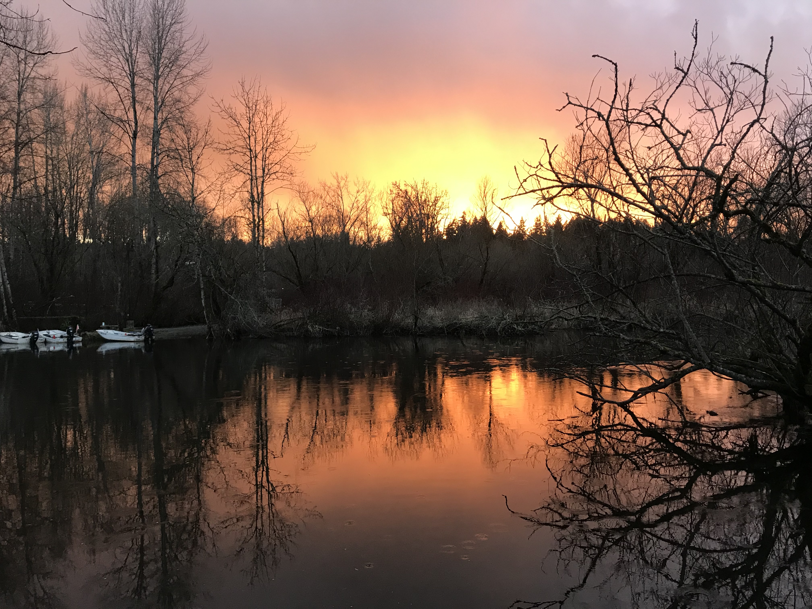
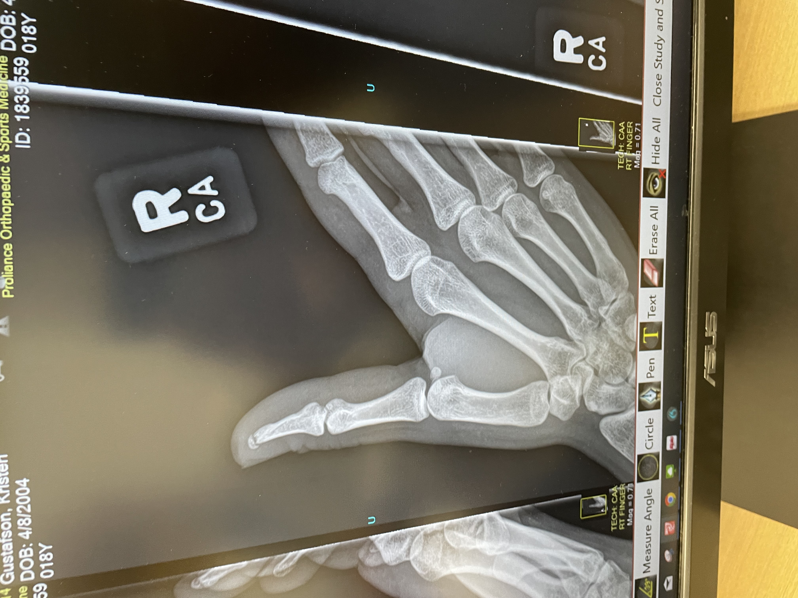

"Never regret anything that made you smile"
Five of My Favorite Things
- Favorite Song: Otherside of Paradise by Glass Animals
- Favorite Game: Catan
- Favorite Soda: Dr. Pepper
- Favorite Season: Winter
- Favorite Color: Blue
A picture that represents when I'm happy

Picture taken by me, Kristen Gustafson. This is a picture of a sunset at Marymoor Dog Park in Redmond, WA.
A picture that represents when I'm sad

Picture taken by me, Kristen Gustafson. This is a picture of my broken thumb bone, because this was an occurance that made me sad.
One of my favorite quotes
Arnold Palmer Blog
Click on the arnold palmer to see a cool blog!

Photo Credits
Credits for photos that are used here and on the blog: